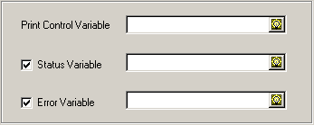
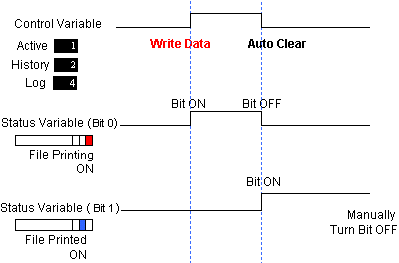
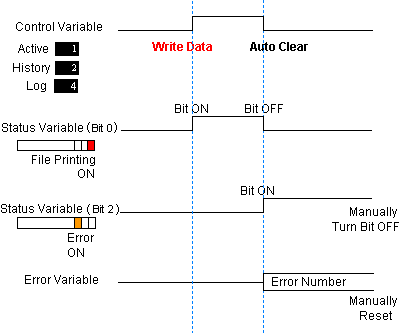
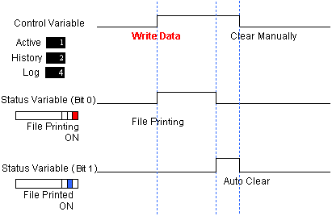
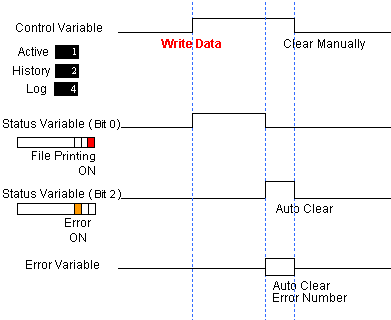

|
|
|
|
|
|
|
|
You can clear the value of the Print Control Variable, the Status Variable, and the Error Variable. This Section describes how these variables are cleared.

Right-click the Alarms and Events node, and select Properties.
In the Print/Save Clear Option field select either Control Variable or Status/Error Variable.
|
Control Variable |
After printing, the value in the Control variable is cleared, but the Error variable and the Status variable are not. |
|
Status/Error Variable |
After printing, the Status variable and the Error variable is cleared when the control variable is cleared to zero. To clear the Control variable, you need to use a switch, run an external program on equipment, or use another method. |

Some printer errors may not change the Status variable. The Status variable may remain in a print state (Bit 0, value=1) and output an error value.
To catch all error types , check the Error variable while Print is in progress.
The Print/Save Clear Option is common between printing and saving messages. As a result, the clear options cannot be set up separately between printing and file saving.
The following describes run time operations when the Print/Save Clear Option is Control Variable.
Write 1, 2, or 4 into the Control Variable to start the Batch Print operation.
|
When print is successful |
 The Status variable's Bit 0 turns ON while printing. When printing is complete, Bit 0 turns OFF, and Bit 1 turns ON. Use a switch, program on equipment, or some other means to turn off Bit 1 in the Status variable. |
|
When an error occurs during print |
 The Status variable's Bit 0 turns ON while printing. When there is a printing error, Bit 0 turns OFF, Bit 2 turns ON, and the error number is stored in the Error variable. Use a switch, program on equipment, or some other means to turn off Bit 2 in the Status variable and reset the Error Variable to zero. |

The above example uses an external 16 bit variable for the Status Variable. If you work with Status Variable values, 1 indicates printing is on, 2 indicates printing is complete, and 4 indicates a printing error.
The following describes runtime operations when the Print/Save Clear Option is Status/Error Variable.
Write 1, 2, or 4 into the Control Variable to start the Batch Print operation.
Use a switch, run a program from equipment, or use some other means to clear the Control variable to zero.
|
When print is successful |
 The Status variable's Bit 0 is ON while printing. When printing is complete, Bit 0 turns OFF, and Bit 1 turns ON. When you manually clear the Control variable, Bit 1 of the Status variables turns OFF. |
|
When an error occurs during print |
 The Status variable's Bit 0 is ON while printing. When there is a printing error, Bit 0 turns OFF, Bit 2 turns ON, and the error number is stored in the Error variable. When you manually clear the Control variable, Bit 2 of the Status variable turns OFF and the Error variable resets to zero. |

The above example uses an external 16 bit variable for the Status Variable. If you work with Status Variable values, 1 indicates printing is on, 2 indicates printing is complete, and 4 indicates a printing error.